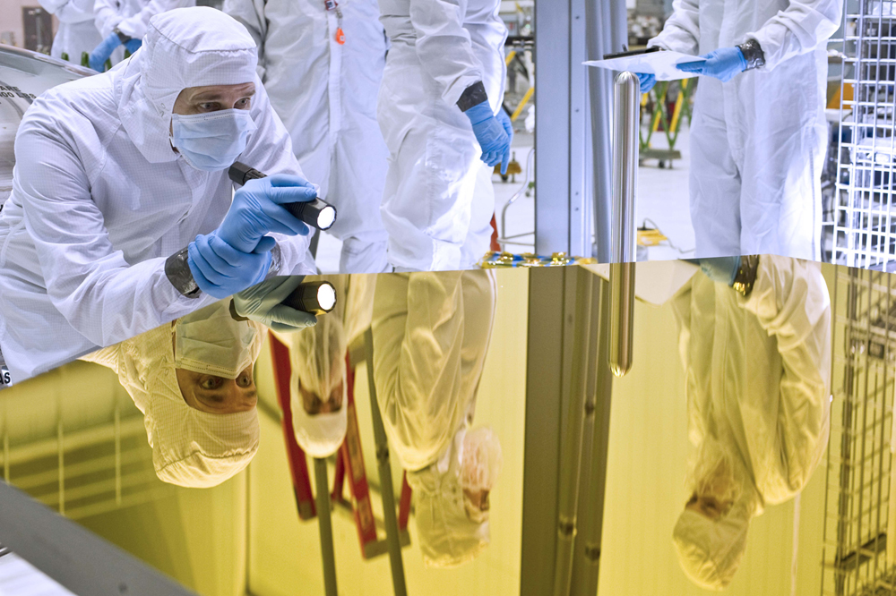
- List the ways by which light travels from a source to another location.
There are three ways in which light can travel from a source to another location (Figure . It can come directly from the source through empty space, such as from the Sun to Earth. Or light can travel through various media, such as air and glass, to the person. Light can also arrive after being reflected, such as by a mirror. In all of these cases, light is modeled as traveling in straight lines called rays. Light may change direction when it encounters objects (such as a mirror) or in passing from one material to another (such as in passing from air to glass), but it then continues in a straight line or as a ray. The wordraycomes from mathematics and here means a straight line that originates at some point. It is acceptable to visualize light rays as laser rays (or even science fiction depictions of ray guns).
The word “ray” comes from mathematics and here means a straight line that originates at some point.
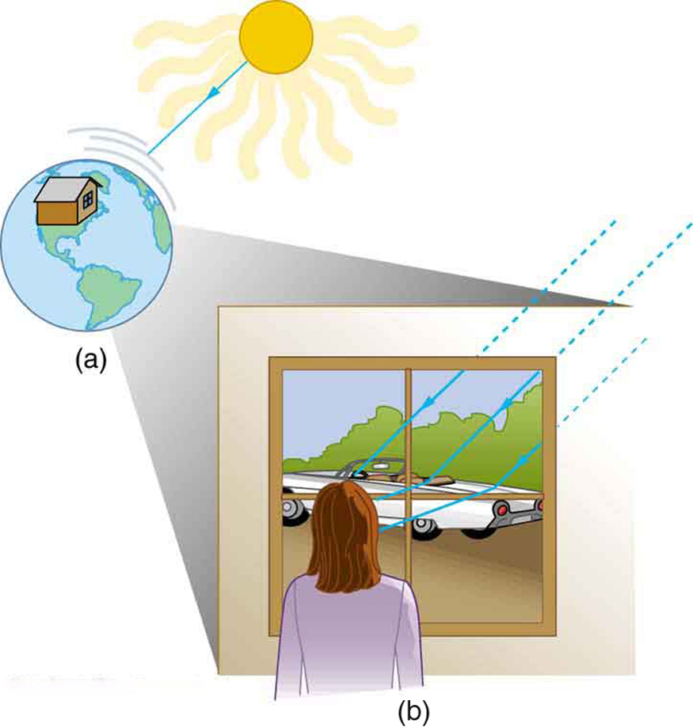
Experiments, as well as our own experiences, show that when light interacts with objects several times as large as its wavelength, it travels in straight lines and acts like a ray. Its wave characteristics are not pronounced in such situations. Since the wavelength of light is less than a micron (a thousandth of a millimeter), it acts like a ray in the many common situations in which it encounters objects larger than a micron. For example, when light encounters anything we can observe with unaided eyes, such as a mirror, it acts like a ray, with only subtle wave characteristics. We will concentrate on the ray characteristics in this chapter.
Since light moves in straight lines, changing directions when it interacts with materials, it is described by geometry and simple trigonometry. This part of optics, where the ray aspect of light dominates, is therefore calledgeometric optics. There are two laws that govern how light changes direction when it interacts with matter. These are the law of reflection, for situations in which light bounces off matter, and the law of refraction, for situations in which light passes through matter.
Definition: GEOMETRIC OPTICS
The part of optics dealing with the ray aspect of light is called geometric optics.
📖 OpenStax College Physics, Section 25.1. openstax.org · CC BY 4.0
- Explain reflection of light from polished and rough surfaces.
Whenever we look into a mirror, or squint at sunlight glinting from a lake, we are seeing a reflection. When you look at this page, too, you are seeing light reflected from it. Large telescopes use reflection to form an image of stars and other astronomical objects.
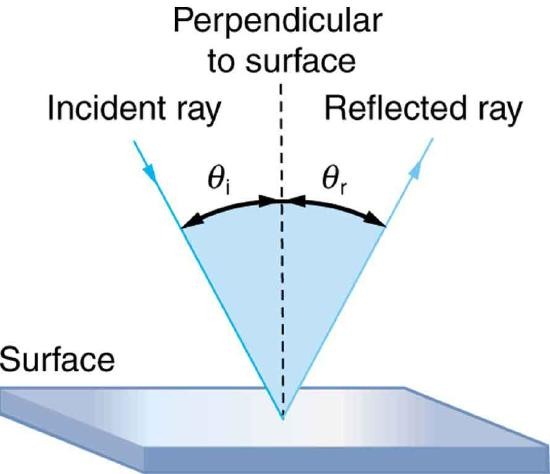
The law of reflection is illustrated in Figure , which also shows how the angles are measured relative to the perpendicular to the surface at the point where the light ray strikes. We expect to see reflections from smooth surfaces, but Figure illustrates how a rough surface reflects light. Since the light strikes different parts of the surface at different angles, it is reflected in many different directions, or diffused.
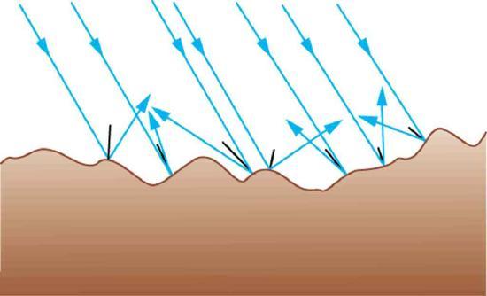
Diffused light is what allows us to see a sheet of paper from any angle, as illustrated in Figure \(\PageIndex{3a}\). Many objects, such as people, clothing, leaves, and walls, have rough surfaces and can be seen from all sides. A mirror, on the other hand, has a smooth surface (compared with the wavelength of light) and reflects light at specific angles, as illustrated in Figure \(\PageIndex{3b}\). When the moon reflects from a lake, as shown in Figure , a combination of these effects takes place.
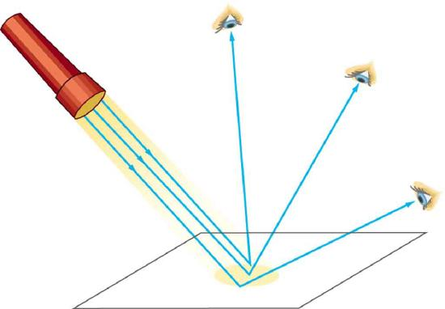
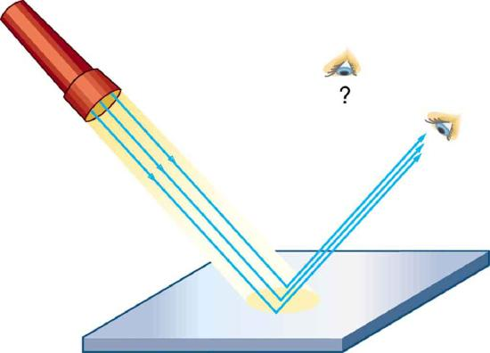
The law of reflection is very simple: The angle of reflection equals the angle of incidence.
Definition: THE LAW OF REFLECTION
The angle of reflection equals the angle of incidence.
When we see ourselves in a mirror, it appears that our image is actually behind the mirror. This is illustrated in Figure . We see the light coming from a direction determined by the law of reflection. The angles are such that our image is exactly the same distance behind the mirror as we stand away from the mirror. If the mirror is on the wall of a room, the images in it are all behind the mirror, which can make the room seem bigger. Although these mirror images make objects appear to be where they cannot be (like behind a solid wall), the images are not figments of our imagination. Mirror images can be photographed and videotaped by instruments and look just as they do with our eyes (optical instruments themselves). The precise manner in which images are formed by mirrors and lenses will be treated in later sections of this chapter
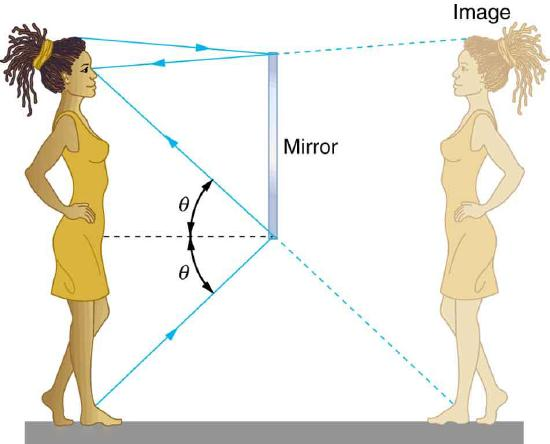
TAKE-HOME EXPERIMENT: LAW OF REFLECTION
Take a piece of paper and shine a flashlight at an angle at the paper, as shown in Figure \(\PageIndex{5a}\). Now shine the flashlight at a mirror at an angle. Do your observations confirm the predictions in Figure ? Shine the flashlight on various surfaces and determine whether the reflected light is diffuse or not. You can choose a shiny metallic lid of a pot or your skin. Using the mirror and flashlight, can you confirm the law of reflection? You will need to draw lines on a piece of paper showing the incident and reflected rays. (This part works even better if you use a laser pencil.)
📖 OpenStax College Physics, Section 25.2. openstax.org · CC BY 4.0
- Determine the index of refraction, given the speed of light in a medium.
It is easy to notice some odd things when looking into a fish tank. For example, you may see the same fish appearing to be in two different places (Figure . This is because light coming from the fish to us changes direction when it leaves the tank, and in this case, it can travel two different paths to get to our eyes. The changing of a light ray’s direction (loosely called bending) when it passes through variations in matter is calledrefraction. Refraction is responsible for a tremendous range of optical phenomena, from the action of lenses to voice transmission through optical fibers.
Definition: REFRACTION
The changing of a light ray’s direction (loosely called bending) when it passes through variations in matter is called refraction.
The speed of light \(c\) not only affects refraction, it is one of the central concepts of Einstein’s theory of relativity. As the accuracy of the measurements of the speed of light were improved, \(c\) was found not to depend on the velocity of the source or the observer. However, the speed of light does vary in a precise manner with the material it traverses. These facts have far-reaching implications, as we will see in "Special Relativity." It makes connections between space and time and alters our expectations that all observers measure the same time for the same event, for example. The speed of light is so important that its value in a vacuum is one of the most fundamental constants in nature as well as being one of the four fundamental SI units.
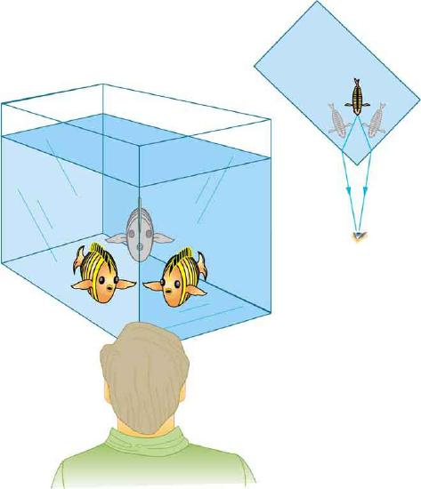
Why does light change direction when passing from one material (medium) to another? It is because light changes speed when going from one material to another. So before we study the law of refraction, it is useful to discuss the speed of light and how it varies in different media.
Early attempts to measure the speed of light, such as those made by Galileo, determined that light moved extremely fast, perhaps instantaneously. The first real evidence that light traveled at a finite speed came from the Danish astronomer Ole Roemer in the late 17th century. Roemer had noted that the average orbital period of one of Jupiter’s moons, as measured from Earth, varied depending on whether Earth was moving toward or away from Jupiter. He correctly concluded that the apparent change in period was due to the change in distance between Earth and Jupiter and the time it took light to travel this distance. From his 1676 data, a value of the speed of light was calculated to be \(2.26 \times 10^{8} m/s\) (only 25% different from today’s accepted value). In more recent times, physicists have measured the speed of light in numerous ways and with increasing accuracy. One particularly direct method, used in 1887 by the American physicist Albert Michelson (1852–1931), is illustrated in Figure . Light reflected from a rotating set of mirrors was reflected from a stationary mirror 35 km away and returned to the rotating mirrors. The time for the light to travel can be determined by how fast the mirrors must rotate for the light to be returned to the observer’s eye.
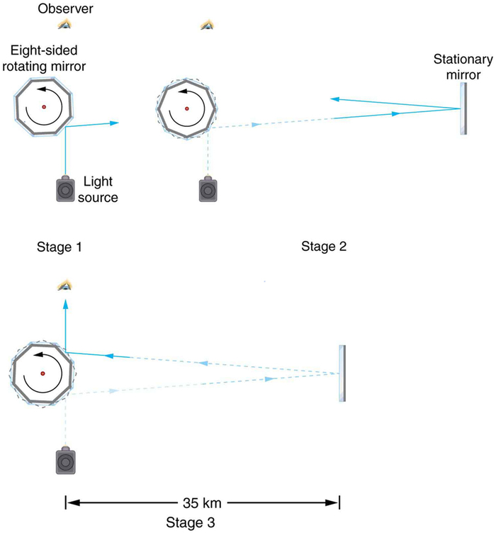
The speed of light is now known to great precision. In fact, the speed of light in a vacuum \(c\) is so important that it is accepted as one of the basic physical quantities and has the fixed value.
VALUE OF THE SPEED OF LIGHT
The approximate value of \(3.00 \times 10^{8} m/s\) is used whenever three-digit accuracy is sufficient. The speed of light through matter is less than it is in a vacuum, because light interacts with atoms in a material. The speed of light depends strongly on the type of material, since its interaction with different atoms, crystal lattices, and other substructures varies.
Definition: INDEX OF REFRACTION
We define theindex of refraction\(n\) of a material to be
where \(v\) is the observed speed of light in the material. Since the speed of light is always less than \(c\) in matter and equals \(c\) only in a vacuum, the index of refraction is always greater than or equal to one. That is, \(n \gt 1\).
Table gives the indices of refraction for some representative substances. The values are listed for a particular wavelength of light, because they vary slightly with wavelength. (This can have important effects, such as colors produced by a prism.) Note that for gases, \(n\) is close to 1.0. This seems reasonable, since atoms in gases are widely separated and light travels at \(c\) in the vacuum between atoms. It is common to take \(n = 1\) for gases unless great precision is needed. Although the speed of light \( v\) in a medium varies considerably from its value \( c\) in a vacuum, it is still a large speed.
| Medium | n |
|---|---|
| Gases at \(0ºC, 1 atm\) | |
| Air | 1.000293 |
| Carbon dioxide | 1.00045 |
| Hydrogen | 1.000139 |
| Oxygen | 1.000271 |
| Liquids at 20ºC | |
| Benzene | 1.501 |
| Carbon disulfide | 1.628 |
| Carbon tetrachloride | 1.461 |
| Ethanol | 1.361 |
| Glycerine | 1.473 |
| Water, fresh | 1.333 |
| Solids at 20ºC | |
| Diamond | 2.419 |
| Fluorite | 1.434 |
| Glass, crown | 1.52 |
| Glass, flint | 1.66 |
| Ice at 20ºC | 1.309 |
| Polystyrene | 1.49 |
| Plexiglas | 1.51 |
| Quartz, crystalline | 1.544 |
| Quartz, fused | 1.458 |
| Sodium chloride | 1.544 |
| Zircon | 1.923 |
Calculate the speed of light in zircon, a material used in jewelry to imitate diamond.
The speed of light in a material, \(v\), can be calculated from the index of refraction \(n\) of the material using the equation \(n = c/v\).
The equation for index of refraction (Equation \ref{index}) can be rearranged to determine \(v\)
The index of refraction for zircon is given as 1.923 in Table , and \(c\) is given in the equation for speed of light. Entering these values in the last expression gives
This speed is slightly larger than half the speed of light in a vacuum and is still high compared with speeds we normally experience. The only substance listed in Table that has a greater index of refraction than zircon is diamond. We shall see later that the large index of refraction for zircon makes it sparkle more than glass, but less than diamond.
Figure shows how a ray of light changes direction when it passes from one medium to another. As before, the angles are measured relative to a perpendicular to the surface at the point where the light ray crosses it. (Some of the incident light will be reflected from the surface, but for now we will concentrate on the light that is transmitted.) The change in direction of the light ray depends on how the speed of light changes. The change in the speed of light is related to the indices of refraction of the media involved. In the situations shown in Figure , medium 2 has a greater index of refraction than medium 1. This means that the speed of light is less in medium 2 than in medium 1. Note that as shown in Figure \(\PageIndex{3a}\), the direction of the ray moves closer to the perpendicular when it slows down. Conversely, as shown in Figure \(\PageIndex{3b}\), the direction of the ray moves away from the perpendicular when it speeds up. The path is exactly reversible. In both cases, you can imagine what happens by thinking about pushing a lawn mower from a footpath onto grass, and vice versa. Going from the footpath to grass, the front wheels are slowed and pulled to the side as shown. This is the same change in direction as for light when it goes from a fast medium to a slow one. When going from the grass to the footpath, the front wheels can move faster and the mower changes direction as shown. This, too, is the same change in direction as for light going from slow to fast.
![The figures compare the working of a lawn mower to that of the refraction phenomenon. In figure (a) the lawn mower goes from a sidewalk to grass, it slows down and bends towards a perpendicular drawn at the point of contact of the mower with the surface of separation. An imaginary line along the mower when it is on sidewalk is taken to be the incident ray and the angle which the mower makes with the perpendicular is taken to be theta one. As it goes into the grass, the mower turns and the imaginary line moves towards the perpendicular line drawn and makes an angle theta two with it. The imaginary line drawn along the mower when the mower is in the grass is taken to be the refracted ray. Sidewalk is taken to be a medium of refractive index n one and that of grass to be taken as n two. In figure (b), the situation is the reverse of what has happened in figure (a). The mower moves from grass to sidewalk and the ray of light moves away from the perpendicular when it speeds up.](images/ch25/fig25-12-the-figures-compare-the-working-of-a-law.jpg)
The amount that a light ray changes its direction depends both on the incident angle and the amount that the speed changes. For a ray at a given incident angle, a large change in speed causes a large change in direction, and thus a large change in angle. The exact mathematical relationship is thelaw of refraction, or "Snell's Law," which is stated in equation form as
THE LAW OF REFRACTION (Snell's Law)
Here, \(n_{1}\) and \(n_{2}\) are the indices of refraction for medium 1 and 2, and \(\theta_{1}\) and \(\theta_{2}\) are the angles between the rays and the perpendicular in medium 1 and 2, as shown in Figure . The incoming ray is called the incident ray and the outgoing ray the refracted ray, and the associated angles the incident angle and the refracted angle. The law of refraction is also called Snell’s law after the Dutch mathematician Willebrord Snell (1591–1626), who discovered it in 1621. Snell’s experiments showed that the law of refraction was obeyed and that a characteristic index of refraction \(n\) could be assigned to a given medium. Snell was not aware that the speed of light varied in different media, but through experiments he was able to determine indices of refraction from the way light rays changed direction.
TAKE-HOME EXPERIMENT: A BROKEN PENCIL
A classic observation of refraction occurs when a pencil is placed in a glass half filled with water. Do this and observe the shape of the pencil when you look at the pencil sideways, that is, through air, glass, water. Explain your observations. Draw ray diagrams for the situation.
Find the index of refraction for medium 2 in Figure \(\PageIndex{3a}\), assuming medium 1 is air and given the incident angle is \(30.0^{\circ}\) and the angle of refraction is \(22.0^{\circ}\).
The index of refraction for air is taken to be 1 in most cases (and up to four significant figures, it is 1.000). Thus \(n_{1} = 1.00\) here. From the given information, \(\theta_{1} = 30.0^{\circ}\) and \(\theta_{2} = 22.0^{\circ}\) With this information, the only unknown in Snell’s law is \(n_{2}\), so that it can be used to find this unknown.
Snell's law (Equation \ref{25.4.2}) can be rearranged to isolate \(n_{2}\) gives
Entering known values,
This is the index of refraction for water, and Snell could have determined it by measuring the angles and performing this calculation. He would then have found 1.33 to be the appropriate index of refraction for water in all other situations, such as when a ray passes from water to glass. Today we can verify that the index of refraction is related to the speed of light in a medium by measuring that speed directly.
Suppose that in a situation like that in the previous example, light goes from air to diamond and that the incident angle is \(30.0^{\circ}\). Calculate the angle of refraction \(\theta_{2}\) in the diamond.
Again the index of refraction for air is taken to be \(n_{1} = 1.00\), and we are given \(\theta_{1} = 30.0^{\circ}\). We can look up the index of refraction for diamond in Table , finding \(n_{2} = 2.419\). The only unknown in Snell’s law is \(\theta_{2}\), which we wish to determine.
Solving Snell’s law (Equation \ref{25.4.2}) for \(\sin{\theta_{2}}\) yields
Entering known values,
For the same \(30^{\circ}\) angle of incidence, the angle of refraction in diamond is significantly smaller than in water (\(11.9^{\circ}\) rather than \(22^{\circ}\) -- see the preceding example).
📖 OpenStax College Physics, Section 25.3. openstax.org · CC BY 4.0
- Explain the phenomenon of total internal reflection.
- Describe the workings and uses of fiber optics.
- Analyze the reason for the sparkle of diamonds.
A good-quality mirror may reflect more than 90% of the light that falls on it, absorbing the rest. But it would be useful to have a mirror that reflects all of the light that falls on it. Interestingly, we can produce total reflection using an aspect ofrefraction.
Consider what happens when a ray of light strikes the surface between two materials, such as is shown in Figure 1a. Part of the light crosses the boundary and is refracted; the rest is reflected. If, as shown in the figure, the index of refraction for the second medium is less than for the first, the ray bends away from the perpendicular. (Since \(n_{1} \gt n_{2}\), the angle of refraction is greater than the angle of incidence -- that is, \(\theta_{2} \gt \theta_{1}\).) Now imagine what happens as the incident angle is increased. This causes \(\theta_{2}\) to increase also. The largest the angle of refraction \(\theta_{2}\) can be is \(90^{\circ}\), as shown in Figure 1b. Thecritical angle\(\theta_{c}\) for a combination of materials is defined to be the incident angle \(\theta_{1}\) that produces an angle of refraction of \(90^{\circ}\). That is, \(\theta_{c}\) is the incident angle for which \(\theta_{2} = 90^{\circ}\). If the incident angle \(\theta_{1}\) is greater than the critical angle, as shown in Figure 1c, then all of the light is reflected back into medium 1, a condition calledtotal internal reflection.
The incident angle \(\theta_{1}\) that produces an angle of refraction of \(90^{\circ}\) is called the critical angle, \(\theta_{c}\).
![In the first figure, an incident ray at an angle theta 1 with a perpendicular line drawn at the point of incidence travels from n1 to n2. The incident ray suffers both refraction and reflection. The angle of refraction is theta 2. In the second figure, as theta 1 is increased, the angle of refraction theta 2 becomes 90 degrees and the angle of reflection corresponding to 90 degrees is theta c. In the third figure, theta c greater than theta i, total internal reflection takes place and instead of refraction, reflection takes place and the light ray travels back into medium n1.](images/ch25/fig25-13-in-the-first-figure-an-incident-ray-at-a.jpg)
Snell’s lawstates the relationship between angles and indices of refraction. It is given by
When the incident angle equals the critical angle (\(\theta_{1} = \theta_{c}\)), the angle of refraction is \(90^{\circ}\) (\(\theta_{2} = 90^{\circ}\)). Noting that \(\sin{90^{\circ}} = 1\), Snell’s law in this case becomes
The critical angle \(\theta_{c}\) for a given combination of materials is thus
for \(n_{1} \gt n_{2}\).
Total internal reflection occurs for any incident angle greater than the critical angle \(\theta_{c}\), and it can only occur when the second medium has an index of refraction less than the first. Note the above equation is written for a light ray that travels in medium 1 and reflects from medium 2, as shown in the figure.
What is the critical angle for light traveling in a polystyrene (a type of plastic) pipe surrounded by air?
The index of refraction for polystyrene is found to be 1.49 and the index of refraction of air can be taken to be 1.00, as before. Thus, the condition that the second medium (air) has an index of refraction less than the first (plastic) is satisfied, and the equation \(\theta_{c} = \sin{\left( n_{2} / n_{1} \right)}^{-1}\) can be used to find the critical angle \(\theta_{c}\) Here, then, \(n_{2} = 1.00\) and \(n_{1} = 1.49\).
The critical angle is given by
Substituting the identified values gives
This means that any ray of light inside the plastic that strikes the surface at an angle greater than \(42.2^{\circ}\) will be totally reflected. This will make the inside surface of the clear plastic a perfect mirror for such rays without any need for the silvering used on common mirrors. Different combinations of materials have different critical angles, but any combination with \(n_{1} \gt n_{2}\) can produce total internal reflection. The same calculation as made here shows that the critical angle for a ray going from water to air is \(48.6^{\circ}\), while that from diamond to air is \(24.4^{\circ}\), and that from flint glass to crown glass is \(66.3^{\circ}\). There is no total reflection for rays going in the other direction -- for example, from air to water -- since the condition that the second medium must have a smaller index of refraction is not satisfied. A number of interesting applications of total internal reflection follow.
Fiber optics is one application of total internal reflection that is in wide use. In communications, it is used to transmit telephone, internet, and cable TV signals.Fiber opticsemploys the transmission of light down fibers of plastic or glass. Because the fibers are thin, light entering one is likely to strike the inside surface at an angle greater than the critical angle and, thus, be totally reflected (Figure . The index of refraction outside the fiber must be smaller than inside, a condition that is easily satisfied by coating the outside of the fiber with a material having an appropriate refractive index. In fact, most fibers have a varying refractive index to allow more light to be guided along the fiber through total internal refraction. Rays are reflected around corners as shown, making the fibers into tiny light pipes.
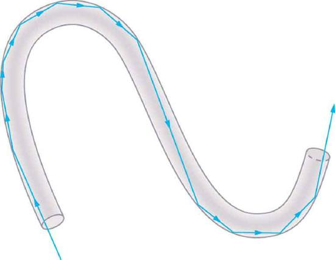
Bundles of fibers can be used to transmit an image without a lens, as illustrated in Figure . The output of a device called anendoscopeis shown in Figure \(\PageIndex{3b}\). Endoscopes are used to explore the body through various orifices or minor incisions. Light is transmitted down one fiber bundle to illuminate internal parts, and the reflected light is transmitted back out through another to be observed. Surgery can be performed, such as arthroscopic surgery on the knee joint, employing cutting tools attached to and observed with the endoscope. Samples can also be obtained, such as by lassoing an intestinal polyp for external examination.
Fiber optics has revolutionized surgical techniques and observations within the body. There are a host of medical diagnostic and therapeutic uses. The flexibility of the fiber optic bundle allows it to navigate around difficult and small regions in the body, such as the intestines, the heart, blood vessels, and joints. Transmission of an intense laser beam to burn away obstructing plaques in major arteries as well as delivering light to activate chemotherapy drugs are becoming commonplace. Optical fibers have in fact enabled microsurgery and remote surgery where the incisions are small and the surgeon’s fingers do not need to touch the diseased tissue.
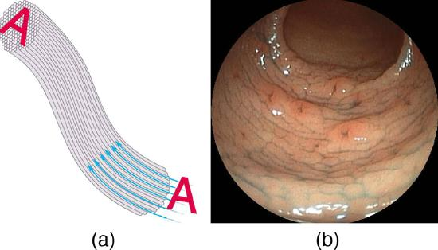
Fibers in bundles are surrounded by a cladding material that has a lower index of refraction than the core (Figure . The cladding prevents light from being transmitted between fibers in a bundle. Without cladding, light could pass between fibers in contact, since their indices of refraction are identical. Since no light gets into the cladding (there is total internal reflection back into the core), none can be transmitted between clad fibers that are in contact with one another. The cladding prevents light from escaping out of the fiber; instead most of the light is propagated along the length of the fiber, minimizing the loss of signal and ensuring that a quality image is formed at the other end. The cladding and an additional protective layer make optical fibers flexible and durable.
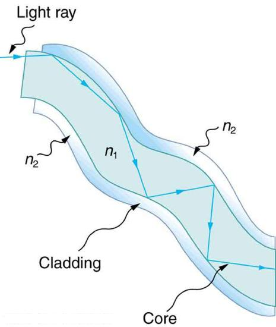
The cladding prevents light from being transmitted between fibers in a bundle.
Special tiny lenses that can be attached to the ends of bundles of fibers are being designed and fabricated. Light emerging from a fiber bundle can be focused and a tiny spot can be imaged. In some cases the spot can be scanned, allowing quality imaging of a region inside the body. Special minute optical filters inserted at the end of the fiber bundle have the capacity to image tens of microns below the surface without cutting the surface -- non-intrusive diagnostics. This is particularly useful for determining the extent of cancers in the stomach and bowel.
Most telephone conversations and Internet communications are now carried by laser signals along optical fibers. Extensive optical fiber cables have been placed on the ocean floor and underground to enable optical communications. Optical fiber communication systems offer several advantages over electrical (copper) based systems, particularly for long distances. The fibers can be made so transparent that light can travel many kilometers before it becomes dim enough to require amplification -- much superior to copper conductors. This property of optical fibers is calledlow loss.Lasers emit light with characteristics that allow far more conversations in one fiber than are possible with electric signals on a single conductor. This property of optical fibers is calledhigh bandwidth.Optical signals in one fiber do not produce undesirable effects in other adjacent fibers. This property of optical fibers is calledreduced crosstalk.We shall explore the unique characteristics of laser radiation in a later chapter.
A light ray that strikes an object consisting of two mutually perpendicular reflecting surfaces is reflected back exactly parallel to the direction from which it came. This is true whenever the reflecting surfaces are perpendicular, and it is independent of the angle of incidence. Such an object, shown in Figure , is called acorner reflector, since the light bounces from its inside corner. Many inexpensive reflector buttons on bicycles, cars, and warning signs have corner reflectors designed to return light in the direction from which it originated. It was more expensive for astronauts to place one on the moon. Laser signals can be bounced from that corner reflector to measure the gradually increasing distance to the moon with great precision.
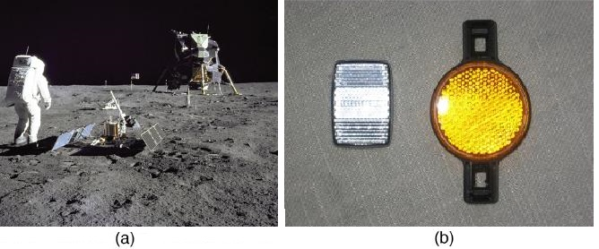
Corner reflectors are perfectly efficient when the conditions for total internal reflection are satisfied. With common materials, it is easy to obtain a critical angle that is less than \(45^{\circ}\). One use of these perfect mirrors is in binoculars, as shown in Figure . Another use is in periscopes found in submarines.
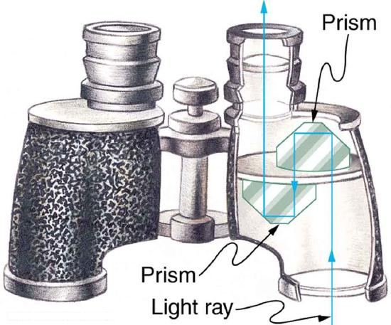
Total internal reflection, coupled with a large index of refraction, explains why diamonds sparkle more than other materials. The critical angle for a diamond-to-air surface is only \(24.4^{\circ}\), and so when light enters a diamond, it has trouble getting back out (Figure . Although light freely enters the diamond, it can exit only if it makes an angle less than \(24.4^{\circ}\) Facets on diamonds are specifically intended to make this unlikely, so that the light can exit only in certain places. Good diamonds are very clear, so that the light makes many internal reflections and is concentrated at the few places it can exit—hence the sparkle. (Zircon is a natural gemstone that has an exceptionally large index of refraction, but not as large as diamond, so it is not as highly prized. Cubic zirconia is manufactured and has an even higher index of refraction (\(\sim 2.17\)), but still less than that of diamond.) The colors you see emerging from a sparkling diamond are not due to the diamond’s color, which is usually nearly colorless. Those colors result from dispersion, the topic of "Dispersion: The Rainbow and Prisms" in the next section. Colored diamonds get their color from structural defects of the crystal lattice and the inclusion of minute quantities of graphite and other materials. The Argyle Mine in Western Australia produces around 90% of the world’s pink, red, champagne, and cognac diamonds, while around 50% of the world’s clear diamonds come from central and southern Africa.
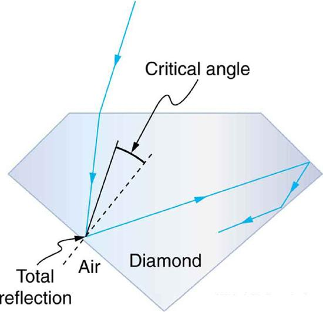
PHET EXPLORATIONS: BENDING LIGHT
Explore bending of light between two media with different indices of refraction. See how changing from air to water to glass changes the bending angle. Play with prisms of different shapes and make rainbows.
📖 OpenStax College Physics, Section 25.4. openstax.org · CC BY 4.0
- Explain the phenomenon of dispersion and discuss its advantages and disadvantages.
Everyone enjoys the spectacle of a rainbow glimmering against a dark stormy sky. How does sunlight falling on clear drops of rain get broken into the rainbow of colors we see? The same process causes white light to be broken into colors by a clear glass prism or a diamond. (See Figure 1.)
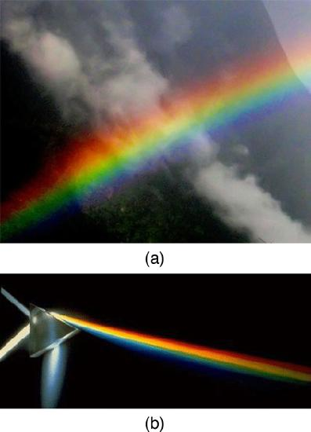
We see about six colors in a rainbow -- red, orange, yellow, green, blue, and violet; sometimes indigo is listed, too. Those colors are associated with different wavelengths of light, as shown in Figure 1. When our eye receives pure-wavelength light, we tend to see only one of the six colors, depending on wavelength. The thousands of other hues we can sense in other situations are our eye’s response to various mixtures of wavelengths. White light, in particular, is a fairly uniform mixture of all visible wavelengths. Sunlight, considered to be white, actually appears to be a bit yellow because of its mixture of wavelengths, but it does contain all visible wavelengths. The sequence of colors in rainbows is the same sequence as the colors plotted versus wavelength in Figure 2. What this implies is that white light is spread out according to wavelength in a rainbow.Dispersionis defined as the spreading of white light into its full spectrum of wavelengths. More technically, dispersion occurs whenever there is a process that changes the direction of light in a manner that depends on wavelength. Dispersion, as a general phenomenon, can occur for any type of wave and always involves wavelength-dependent processes.
Dispersion is defined to be the spreading of white light into its full spectrum of wavelengths.
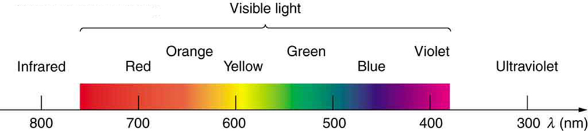
Refraction is responsible for dispersion in rainbows and many other situations. The angle of refraction depends on the index of refraction, as we saw in "The Law of Refraction." We know that the index of refraction \(n\) depends on the medium. But for a given medium, \(n\) also depends on wavelength (Table . Note that, for a given medium, \(n\) increases as wavelength decreases and is greatest for violet light. Thus violet light is bent more than red light, as shown for a prism in Figure 3 and the light is dispersed into the same sequence of wavelengths as seen in 1 and 2.
MAKING CONNECTIONS: DISPERSION
Any type of wave can exhibit dispersion. Sound waves, all types of electromagnetic waves, and water waves can be dispersed according to wavelength. Dispersion occurs whenever the speed of propagation depends on wavelength, thus separating and spreading out various wavelengths. Dispersion may require special circumstances and can result in spectacular displays such as in the production of a rainbow. This is also true for sound, since all frequencies ordinarily travel at the same speed. If you listen to sound through a long tube, such as a vacuum cleaner hose, you can easily hear it is dispersed by interaction with the tube. Dispersion, in fact, can reveal a great deal about what the wave has encountered that disperses its wavelengths. The dispersion of electromagnetic radiation from outer space, for example, has revealed much about what exists between the stars -- the so-called empty space.
| Medium | Red (660 nm) | Orange (610 nm) | Yellow (580 nm) | Green (550 nm) | Blue (470 nm) | Violet (410 nm) |
|---|---|---|---|---|---|---|
| Water | 1.331 | 1.332 | 1.333 | 1.335 | 1.338 | 1.342 |
| Diamond | 2.410 | 2.415 | 2.417 | 2.426 | 2.444 | 2.458 |
| Glass, crown | 1.512 | 1.514 | 1.518 | 1.519 | 1.524 | 1.530 |
| Glass, flint | 1.662 | 1.665 | 1.667 | 1.674 | 1.684 | 1.698 |
| Polustyrene | 1.488 | 1.490 | 1.492 | 1.493 | 1.499 | 1.506 |
| Quartz, fused | 1.455 | 1.456 | 1.458 | 1.459 | 1.462 | 1.468 |
![Figure (a) shows a triangle representing a prism and a pure wavelength of incident light falling onto it and getting refracted at both sides of the prism. The refracted ray runs parallel to the base of the prism and then emerges after getting refracted from the other surface. Figure (b) shows a triangle representing a prism and an incident white light falling onto it and getting refracted at the first surface with two refracted rays with slightly different angles of separation. The refracted rays, on falling on the second surface, refract with various angles of refraction. A sequence of red to violet is produced when light emerges out of the prism. Red at 760 nanometers and violet at 380 nanometers.](images/ch25/fig25-22-figure-a-shows-a-triangle-representing-a.jpg)
Rainbows are produced by a combination of refraction and reflection. You may have noticed that you see a rainbow only when you look away from the sun. Light enters a drop of water and is reflected from the back of the drop, as shown in Figure 4. The light is refracted both as it enters and as it leaves the drop. Since the index of refraction of water varies with wavelength, the light is dispersed, and a rainbow is observed, as shown in Figure 5a. (There is no dispersion caused by reflection at the back surface, since the law of reflection does not depend on wavelength.) The actual rainbow of colors seen by an observer depends on the myriad of rays being refracted and reflected toward the observer’s eyes from numerous drops of water. The effect is most spectacular when the background is dark, as in stormy weather, but can also be observed in waterfalls and lawn sprinklers. The arc of a rainbow comes from the need to be looking at a specific angle relative to the direction of the sun, as illustrated in Figure 5b. (If there are two reflections of light within the water drop, another “secondary” rainbow is produced. This rare event produces an arc that lies above the primary rainbow arc -- see Figure 5c.)
Rainbows are produced by a combination of refraction and reflection.
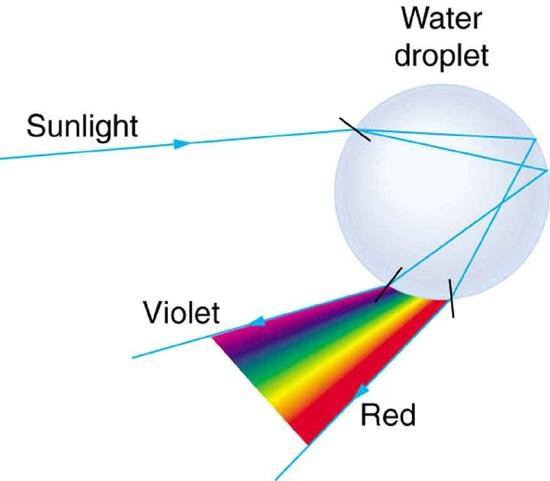
![In figure (a) sunlight is incident on two water droplets close to one another. The incident rays undergo refraction and total internal reflection. From the first droplet, violet color emerges and from the second, red emerges. A woman observes from a distance, the band of seven colors with red on top and violet at the bottom. Two rays each from red and violet reach the observer’s eyes. The angle of separation between the incident light and the emerging red light is theta. In figure (b), a man looks at the rainbow, which is in the shape of an arc. A parallel beam of blue colored rays fall on the rainbow at different positions and then reaches the observer, each ray making the same angle theta with the incident ray. The rays reaching the observer are red in color. Figure (c) shows a spectacular double rainbow in the sky with white clouds as a backdrop.](images/ch25/fig25-24-in-figure-a-sunlight-is-incident-on-two-.jpg)
Dispersion may produce beautiful rainbows, but it can cause problems in optical systems. White light used to transmit messages in a fiber is dispersed, spreading out in time and eventually overlapping with other messages. Since a laser produces a nearly pure wavelength, its light experiences little dispersion, an advantage over white light for transmission of information. In contrast, dispersion of electromagnetic waves coming to us from outer space can be used to determine the amount of matter they pass through. As with many phenomena, dispersion can be useful or a nuisance, depending on the situation and our human goals.
PHET EXPLORATIONS: GEOMETRIC OPTICS
How does a lens form an image? See how light rays are refracted by a lens. Watch how the image changes when you adjust the focal length of the lens, move the object, move the lens, or move the screen.
📖 OpenStax College Physics, Section 25.5. openstax.org · CC BY 4.0
- List the rules for ray tracking for thin lenses.
- Illustrate the formation of images using the technique of ray tracking.
- Determine power of a lens given the focal length.
Lenses are found in a huge array of optical instruments, ranging from a simple magnifying glass to the eye to a camera’s zoom lens. In this section, we will use the law of refraction to explore the properties of lenses and how they form images.
The wordlensderives from the Latin word for a lentil bean, the shape of which is similar to the convex lens in Figure 1. The convex lens shown has been shaped so that all light rays that enter it parallel to its axis cross one another at a single point on the opposite side of the lens. (The axis is defined to be a line normal to the lens at its center, as shown in Figure 1.) Such a lens is called aconverging (or convex) lensfor the converging effect it has on light rays. An expanded view of the path of one ray through the lens is shown, to illustrate how the ray changes direction both as it enters and as it leaves the lens. Since the index of refraction of the lens is greater than that of air, the ray moves towards the perpendicular as it enters and away from the perpendicular as it leaves. (This is in accordance with the law of refraction.) Due to the lens’s shape, light is thus bent toward the axis at both surfaces. The point at which the rays cross is defined to be thefocal pointF of the lens. The distance from the center of the lens to its focal point is defined to be thefocal length \(f\)of the lens. Figure 2 shows how a converging lens, such as that in a magnifying glass, can converge the nearly parallel light rays from the sun to a small spot.
![The figure on the right shows a convex lens. Three rays heading from left to right, 1, 2, and 3, are considered. Ray 2 falls on the axis and rays 1 and 3 are parallel to the axis. The distance from the center of the lens to the focal point F is small f on the right side of the lens. Rays 1 and 3 after refraction converge at F on the axis. Ray 2 on the axis goes undeviated. The figure on the left shows an expanded view of refraction for ray 1. The angle of incidence is theta 1 and angle of refraction theta 2 and a dotted line is the perpendicular drawn to the surface of the lens at the point of incidence. The ray after the refraction at the second surface emerges with an angle equal to theta 1 prime with the perpendicular drawn at that point. The perpendiculars are shown as dotted lines.](images/ch25/fig25-25-the-figure-on-the-right-shows-a-convex-l.jpg)
Definition: CONVERGING OR CONVEX LENS
The lens in which light rays that enter it parallel to its axis cross one another at a single point on the opposite side with a converging effect is called converging lens.
Definition: FOCAL POINT F
The point at which the light rays cross is called the focal point F of the lens.
Definition: FOCAL LENGTH \(f\)
The distance from the center of the lens to its focal point is called focal length \(f\).
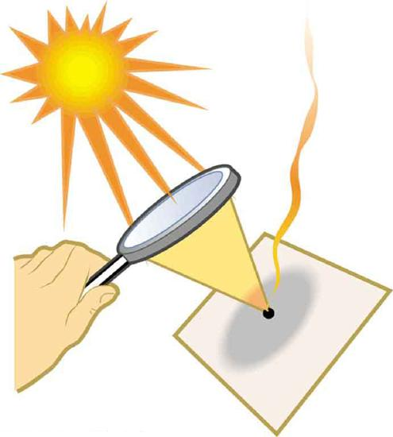
The greater effect a lens has on light rays, the more powerful it is said to be. For example, a powerful converging lens will focus parallel light rays closer to itself and will have a smaller focal length than a weak lens. The light will also focus into a smaller and more intense spot for a more powerful lens. Thepower \(P\)of a lens is defined to be the inverse of its focal length:
Definition: POWER \(P\)
The power \(P\) of a lens is defined to be the inverse of its focal length. In equation form, this is
where \(f\) is the focal length of the lens, which must be given in meters (and not cm or mm). The power of a lens \(P\) has the unit diopters (D), provided that the focal length is given in meters. That is \(1 D = 1/m\) or \(1 m^{-1}\). (Note that this power (optical power, actually) is not the same as power in watts defined in "Work, Energy, and Energy Resources." It is a concept related to the effect of optical devices on light.) Optometrists prescribe common spectacles and contact lenses in units of diopters.
Suppose you take a magnifying glass out on a sunny day and you find that it concentrates sunlight to a small spot 8.00 cm away from the lens. What are the focal length and power of the lens?
The situation here is the same as those shown in Figure 1 and Figure 2. The Sun is so far away that the Sun’s rays are nearly parallel when they reach Earth. The magnifying glass is a convex (or converging) lens, focusing the nearly parallel rays of sunlight. Thus the focal length of the lens is the distance from the lens to the spot, and its power is the inverse of this distance (in m).
The focal length of the lens is the distance from the center of the lens to the spot, given to be 8.00 cm. Thus, \[f = 8.00 cm.\] To find the power of the lens, we must first convert the focal length to meters; then, we substitute this value into the equation for power. This gives \[P = \frac{1}{f} = \frac{1}{0.0800 m} = 12.5 D.\]
This is a relatively powerful lens. The power of a lens in diopters should not be confused with the familiar concept of power in watts. It is an unfortunate fact that the word “power” is used for two completely different concepts. If you examine a prescription for eyeglasses, you will note lens powers given in diopters. If you examine the label on a motor, you will note energy consumption rate given as a power in watts.
Figure shows a concave lens and the effect it has on rays of light that enter it parallel to its axis (the path taken by ray 2 in the figure is the axis of the lens). The concave lens is adiverging lens, because it causes the light rays to bend away (diverge) from its axis. In this case, the lens has been shaped so that all light rays entering it parallel to its axis appear to originate from the same point, \(F\), defined to be the focal point of a diverging lens. The distance from the center of the lens to the focal point is again called the focal length \(f\) of the lens. Note that the focal length and power of a diverging lens are defined to be negative. For example, if the distance to \(F\) in Figure 3 is 5.00 cm, then the focal length is \(f = -5.00 cm\) and the power of the lens is \(P = -20D\). An expanded view of the path of one ray through the lens is shown in the figure to illustrate how the shape of the lens, together with the law of refraction, causes the ray to follow its particular path and be diverged.
![The figure on the top shows an expanded view of refraction for ray 1 falling on a concave lens. The angle of incidence is theta 1 and angle of refraction theta 2. The ray after the refraction at the second surface emerges with an angle equal to theta 1 prime with the perpendicular drawn at that point. Perpendiculars are shown as dotted lines. The figure at the bottom shows a concave lens. Three rays, 1, 2, and 3, are considered. Ray 2 falls on the axis and rays 1 and 3 are parallel to the axis. Rays 1 and 3 after refraction appear to come from a point F on the axis. The distance from the center of the lens to F is small f and is measured from the same side as the incident rays. Ray 2 on the axis goes undeviated.](images/ch25/fig25-27-the-figure-on-the-top-shows-an-expanded-.jpg)
Definition: DIVERGING LENS
A lens that causes the light rays to bend away from its axis is called a diverging lens.
As noted in the initial discussion of the law of refraction in "The Law of Refraction," the paths of light rays are exactly reversible. This means that the direction of the arrows could be reversed for all of the rays in Figures and Figure . For example, if a point light source is placed at the focal point of a convex lens, as shown in Figure 4, parallel light rays emerge from the other side.
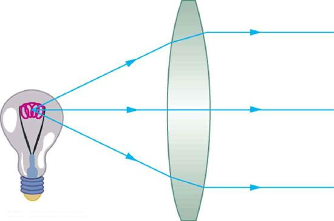
Ray tracingis the technique of determining or following (tracing) the paths that light rays take. For rays passing through matter, the law of refraction is used to trace the paths. Here we use ray tracing to help us understand the action of lenses in situations ranging from forming images on film to magnifying small print to correcting nearsightedness. While ray tracing for complicated lenses, such as those found in sophisticated cameras, may require computer techniques, there is a set of simple rules for tracing rays through thin lenses. Athin lensis defined to be one whose thickness allows rays to refract, as illustrated in Figure , but does not allow properties such as dispersion and aberrations. An ideal thin lens has two refracting surfaces but the lens is thin enough to assume that light rays bend only once. A thin symmetrical lens has two focal points, one on either side and both at the same distance from the lens (Figure . Another important characteristic of a thin lens is that light rays through its center are deflected by a negligible amount, as seen in Figure .
Definition: THIN LENS
A thin lens is defined to be one whose thickness allows rays to refract but does not allow properties such as dispersion and aberrations.
TAKE-HOME EXPERIMENT: A VISIT TO THE OPTICIAN
Look through your eyeglasses (or those of a friend) backward and forward and comment on whether they act like thin lenses.
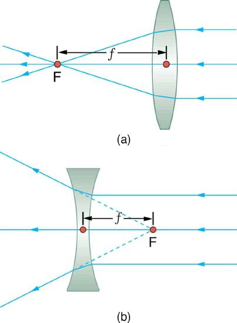
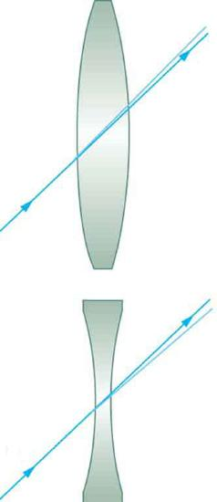
Using paper, pencil, and a straight edge, ray tracing can accurately describe the operation of a lens. The Ruls for Ray Tracing for thin lenses are based on the illustrations already discussed:
RULES FOR RAY TRACING (for thin lenses)
In some circumstances, a lens forms an obvious image, such as when a movie projector casts an image onto a screen. In other cases, the image is less obvious. Where, for example, is the image formed by eyeglasses? We will use ray tracing for thin lenses to illustrate how they form images, and we will develop equations to describe the image formation quantitatively.
Consider an object some distance away from a converging lens, as shown in Figure . To find the location and size of the image formed, we trace the paths of selected light rays originating from one point on the object, in this case the top of the person’s head. The figure shows three rays from the top of the object that can be traced using the ray tracing rules given above. (Rays leave this point going in many directions, but we concentrate on only a few with paths that are easy to trace.) The first ray is one that enters the lens parallel to its axis and passes through the focal point on the other side (rule 1). The second ray passes through the center of the lens without changing direction (rule 3). The third ray passes through the nearer focal point on its way into the lens and leaves the lens parallel to its axis (rule 4). The three rays cross at the same point on the other side of the lens. The image of the top of the person’s head is located at this point. All rays that come from the same point on the top of the person’s head are refracted in such a way as to cross at the point shown. Rays from another point on the object, such as her belt buckle, will also cross at another common point, forming a complete image, as shown. Although three rays are traced in Figure , only two are necessary to locate the image. It is best to trace rays for which there are simple ray tracing rules. Before applying ray tracing to other situations, let us consider the example shown in Figure 7 in more detail.
![First of four images shows an incident ray 1 coming from an object (a girl ) placed on the axis. After refraction, the ray passes through F on other side of the lens. Second of four images shows an incident ray 2 passing through the center without any deviation. Third of four images shows an incident ray passing through F, which after refraction goes parallel to the axis. Fourth image shows a combination of all three rays, 1, 2, and 3, incident on a convex lens; after refraction, they converge or cross at a point below the axis at some distance from F. Here the height of the object h sub o is the height of the girl above the axis and h sub i is the height of the image below the axis. The distance from the center to point F is small f. The distance from the center to the girl is d sub o and that to the image is d sub i.](images/ch25/fig25-31-first-of-four-images-shows-an-incident-r.jpg)
The image formed in Figure is areal image, meaning that it can be projected. That is, light rays from one point on the object actually cross at the location of the image and can be projected onto a screen, a piece of film, or the retina of an eye, for example. Figure shows how such an image would be projected onto film by a camera lens. This figure also shows how a real image is projected onto the retina by the lens of an eye. Note that the image is there whether it is projected onto a screen or not.
Definition: REAL IMAGE
The image in which light rays from one point on the object actually cross at the location of the image and can be projected onto a screen, a piece of film, or the retina of an eye is called a real image.
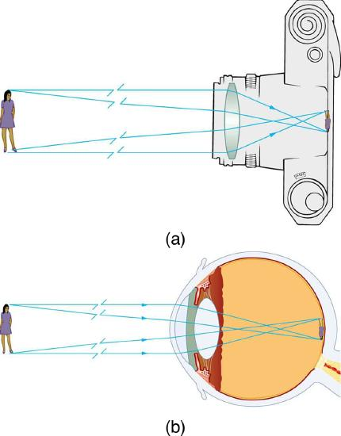
Several important distances appear in Figure 7. We define \(d_{0}\) to be the object of distance, the distance of an object from the center of a lens.Image distance \(d_{i}\)is defined to be the distance of the image from the center of a lens. The height of the object and height of the image are given the symbols \(h_{0}\) and \(h_{i}\), respectively. Images that appear upright relative to the object have heights that are positive and those that are inverted have negative heights. Using the rules of ray tracing and making a scale drawing with paper and pencil, like that in Figure 7, we can accurately describe the location and size of an image. But the real benefit of ray tracing is in visualizing how images are formed in a variety of situations. To obtain numerical information, we use a pair of equations that can be derived from a geometric analysis of ray tracing for thin lenses. Thethin lens equationsare
We define the ratio of image height to object height (\(h_{i}/h_{0}\)) to be themagnification\(m\). (The minus sign in the equation above will be discussed shortly.) The thin lens equations are broadly applicable to all situations involving thin lenses (and “thin” mirrors, as we will see later). We will explore many features of image formation in the following worked examples.
Definition: IMAGE DISTANCE
The distance of the image from the center of the lens is called image distance.
Definition: THIN LENS EQUATIONS AND MAGNIFICATION
A clear glass light bulb is placed 0.750 m from a convex lens having a 0.500 m focal length, as shown in the figure. Use ray tracing to get an approximate location for the image. Then use the thin lens equations to calculate
Verify that ray tracing and the thin lens equations produce consistent results.
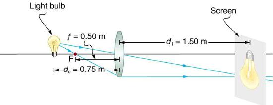
Since the object is placed farther away from a converging lens than the focal length of the lens, this situation is analogous to those illustrated in Figure 7 and Figure 8. Ray tracing to scale should produce similar results for \(d_{i}\). Numerical solutions for \(d_{i}\) and \(m\) can be obtained using the thin lens equations, noting that \(d_{o} = 0.750 m\) and \(f = 0.500 m\).
The ray tracing to scale in Figure 9 shows two rays from a point on the bulb’s filament crossing about 1.50 m on the far side of the lens. Thus the image distance \(d_{i}\) is about 1.50 m. Similarly, the image height based on ray tracing is greater than the object height by about a factor of 2, and the image is inverted. Thus \(m\) is about –2. The minus sign indicates that the image is inverted.
The thin lens equations can be used to find \(d_{i}\) from the given information: \[\frac{1}{d_{o}} + \frac{1}{d_{i}} = \frac{1}{f} . \] Rearranging to isolate \(d_{i}\) gives \[\frac{1}{d_{i}} = \frac{1}{f} - \frac{1}{d_{o}}.\] Entering known quantities gives a value for \(1/d_{i}\): \[\frac{1}{d_{i}} = \frac{1}{0.500 m} - \frac{1}{0.750m} = \frac{0.667}{m}.\] This must be inverted to find \(d_{i}\): \[d_{i} = \frac{m}{0.667} = 1.50m .\] Note that another way to find \(d_{i}\) is to rearrange equation: \[\frac{1}{d_{i}} = \frac{1}{f} - \frac{1}{d_{o}}.\] This yields the equation for the image distance as: \[d_{i} = \frac{fd_{o}}{d_{o} - f}.\label{25.7.3}\] Note that there is no inverting here.
The thin lens equations can be used to find the magnification \(m\), since both \(d_{i}\) and \(d_{o}\) are known. Entering their values gives
Note that the minus sign causes the magnification to be negative when the image is inverted. Ray tracing and the use of the thin lens equations produce consistent results. The thin lens equations give the most precise results, being limited only by the accuracy of the given information. Ray tracing is limited by the accuracy with which you can draw, but it is highly useful both conceptually and visually.
Real images, such as the one considered in the previous example, are formed by converging lenses whenever an object is farther from the lens than its focal length. This is true for movie projectors, cameras, and the eye. We shall refer to these ascase 1images. A case 1 image is formed when \(d_{o} \gt f\) and \(f\) is positive, as in Figure \(\PageIndex{10a}\). (A summary of the three cases or types of image formation appears at the end of this section.)
A different type of image is formed when an object, such as a person's face, is held close to a convex lens. The image is upright and larger than the object, as seen in Figure \(\PageIndex{10b}\), and so the lens is called a magnifier. If you slowly pull the magnifier away from the face, you will see that the magnification steadily increases until the image begins to blur. Pulling the magnifier even farther away produces an inverted image as seen in Figure \(\PageIndex{10a}\). The distance at which the image blurs, and beyond which it inverts, is the focal length of the lens. To use a convex lens as a magnifier, the object must be closer to the converging lens than its focal length. This is called acase 2image. A case 2 image is formed when \(d_{o} \lt f\) and \(f\) is positive.
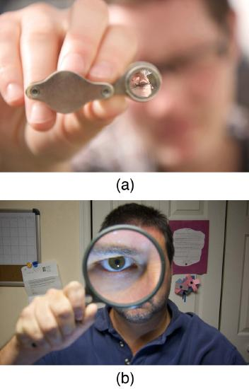
Figure uses ray tracing to show how an image is formed when an object is held closer to a converging lens than its focal length. Rays coming from a common point on the object continue to diverge after passing through the lens, but all appear to originate from a point at the location of the image. The image is on the same side of the lens as the object and is farther away from the lens than the object. This image, like all case 2 images, cannot be projected and, hence, is called avirtual image. Light rays only appear to originate at a virtual image; they do not actually pass through that location in space. A screen placed at the location of a virtual image will receive only diffuse light from the object, not focused rays from the lens. Additionally, a screen placed on the opposite side of the lens will receive rays that are still diverging, and so no image will be projected on it. We can see the magnified image with our eyes, because the lens of the eye converges the rays into a real image projected on our retina. Finally, we note that a virtual image is upright and larger than the object, meaning that the magnification is positive and greater than 1.
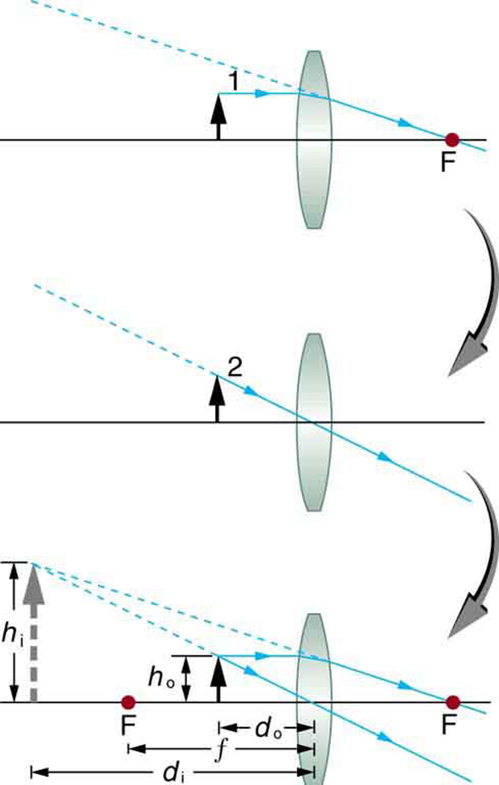
Definition: VIRTUAL IMAGE
An image that is on the same side of the lens as the object and cannot be projected on a screen is called a virtual image.
Suppose the book in Figure \(\PageIndex{11a}\) is held 7.50 cm from a convex lens of focal length 10.0 cm, such as a typical magnifying glass might have. What magnification is produced?
We are given that \(d_{o} = 7.50 cm\) and \(f = 10.0cm\), so we have a situation where the object is placed closer to the lens than its focal length. We therefore expect to get a case 2 virtual image with a positive magnification that is greater than 1. Ray tracing produces an image like that shown in Figure 11 but we will use the thin lens equations to get numerical solutions in this example.
To find the magnification \(m\), we try to use magnification equation, \(m = -d_{i}/d_{o}\). We do not have a value for \(d_{i}\), so that we must first find the location of the image using lens equation. (The procedure is the same as followed in the preceding example, where \(d_{o}\) and \(f\) were known.) Rearranging the magnification equation to isolate \(d_{i}\) gives \[\frac{1}{d_{i}} = \frac{1}{f} - \frac{1}{d_{o}}.\] Entering known values, we obtain a value for \(1/d_{i}\): \[\frac{1}{d_{i}} = \frac{1}{10.0 cm} - \frac{1}{7.50 cm} = \frac{-0.0333}{cm}.\] This must be inverted to find \(d_{i}\): \[d_{i} = - \frac{cm}{0.0333} = -30.0 cm.\] Now the thin lens equation can be used to find the magnification \(m\), since both \(d_{i}\) and \(d_{o}\) are known. Entering their values gives \[m = -\frac{d_{i}}{d_{o}} = - \frac{-30.0 cm}{7.50 cm} = 4.00.\]
A number of results in this example are true of all case 2 images, as well as being consistent with Figure 11. Magnification is indeed positive (as predicted), meaning the image is upright. The magnification is also greater than 1, meaning that the image is larger than the object—in this case, by a factor of 4. Note that the image distance is negative. This means the image is on the same side of the lens as the object. Thus the image cannot be projected and is virtual. (Negative values of \(d_{i}\) occur for virtual images.) The image is farther from the lens than the object, since the image distance is greater in magnitude than the object distance. The location of the image is not obvious when you look through a magnifier. In fact, since the image is bigger than the object, you may think the image is closer than the object. But the image is farther away, a fact that is useful in correcting farsightedness, as we shall see in a later section.
A third type of image is formed by a diverging or concave lens. Try looking through eyeglasses meant to correct nearsightedness. (Figure . You will see an image that is upright but smaller than the object. This means that the magnification is positive but less than 1. The ray diagram in Figure 13 shows that the image is on the same side of the lens as the object and, hence, cannot be projected—it is a virtual image. Note that the image is closer to the lens than the object. This is acase 3image, formed for any object by a negative focal length or diverging lens.
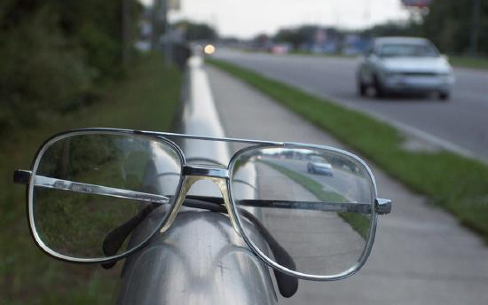
![Figure (a) shows an upright object placed at d sub o equals seven point five cm and in front of a concave lens of on its left side. Parallel ray 1 falls on the lens and gets refracted and dotted backwards to pass through point F on the left side. Figure (b) shows ray 2 going straight through the center of the lens. Figure (c) combines both figures (a) and (b) and the dotted line and the solid line meet at a point on the left side of the lens forming a virtual image which is erect and diminished. Here h sub o is the height of the object above the axis and h sub i is the height of the image above the axis. The distance from the center to the image is d sub i equals 4.29 cm.](images/ch25/fig25-37-figure-a-shows-an-upright-object-placed-.jpg)
Suppose an object such as a book page is held 7.50 cm from a concave lens of focal length –10.0 cm. Such a lens could be used in eyeglasses to correct pronounced nearsightedness. What magnification is produced?
This example is identical to the preceding one, except that the focal length is negative for a concave or diverging lens. The method of solution is thus the same, but the results are different in important ways.
To find the magnification \(m\), we must first find the image distance \(d_{i}\) using thin lens equation
or its alternative rearrangement
We are given that \(f = -10.00 cm\) and \(d_{o} = 7.50 cm\). Entering these yields a value for \(1/d_{i}\):
This must be inverted to find \(d_{i}\):
Or \[d_{i} = \frac{\left(7.5\right) \left(-10\right)}{\left(7.5 - \left(-10\right)\right)} = -75/17.5 = -4.29cm.\] Now the magnification equation can be used to find the magnification \(m\), since both \(d_{i}\) and \(d_{o}\) are known. Entering their values gives
A number of results in this example are true of all case 3 images, as well as being consistent with Figure 13. Magnification is positive (as predicted), meaning the image is upright. The magnification is also less than 1, meaning the image is smaller than the object -- in this case, a little over half its size. The image distance is negative, meaning the image is on the same side of the lens as the object. (The image is virtual.) The image is closer to the lens than the object, since the image distance is smaller in magnitude than the object distance. The location of the image is not obvious when you look through a concave lens. In fact, since the image is smaller than the object, you may think it is farther away. But the image is closer than the object, a fact that is useful in correcting nearsightedness, as we shall see in a later section.
The table summarizes the three types of images formed by single thin lenses. These are referred to as case 1, 2, and 3 images. Convex (converging) lenses can form either real or virtual images (cases 1 and 2, respectively), whereas concave (diverging) lenses can form only virtual images (always case 3). Real images are always inverted, but they can be either larger or smaller than the object. For example, a slide projector forms an image larger than the slide, whereas a camera makes an image smaller than the object being photographed. Virtual images are always upright and cannot be projected. Virtual images are larger than the object only in case 2, where a convex lens is used. The virtual image produced by a concave lens is always smaller than the object -- a case 3 image. We can see and photograph virtual images only by using an additional lens to form a real image.
| Type | Formed When | Image type | \(d_i\) | m |
|---|---|---|---|---|
| Case 1 | positivef \(d_0>f\) | real | positive | negative |
| Case 2 | positivef \(d_0| virtual | negative | positivem > 1 | |
| Case 3 | negativef | virtual | negative | positive |
In "Image Formation by Mirrors," we shall see that mirrors can form exactly the same types of images as lenses.
TAKE-HOME EXPERIMENT: CONCENTRATING SUNLIGHT
Find several lenses and determine whether they are converging or diverging. In general those that are thicker near the edges are diverging and those that are thicker near the center are converging. On a bright sunny day take the converging lenses outside and try focusing the sunlight onto a piece of paper. Determine the focal lengths of the lenses. Be careful because the paper may start to burn, depending on the type of lens you have selected.
Problem-Solving Strategies for Lenses
We do not realize that light rays are coming from every part of the object, passing through every part of the lens, and all can be used to form the final image. We generally feel the entire lens, or mirror, is needed to form an image. Actually, half a lens will form the same, though a fainter, image.
📖 OpenStax College Physics, Section 25.6. openstax.org · CC BY 4.0
- Illustrate image formation in a flat mirror.
- Explain with ray diagrams the formation of an image using spherical mirrors.
- Determine focal length and magnification given radius of curvature, distance of object and image.
We only have to look as far as the nearest bathroom to find an example of an image formed by a mirror. Images in flat mirrors are the same size as the object and are located behind the mirror. Like lenses, mirrors can form a variety of images. For example, dental mirrors may produce a magnified image, just as makeup mirrors do. Security mirrors in shops, on the other hand, form images that are smaller than the object. We will use the law of reflection to understand how mirrors form images, and we will find that mirror images are analogous to those formed by lenses.
Figure helps illustrate how a flat mirror forms an image. Two rays are shown emerging from the same point, striking the mirror, and being reflected into the observer’s eye. The rays can diverge slightly, and both still get into the eye. If the rays are extrapolated backward, they seem to originate from a common point behind the mirror, locating the image. (The paths of the reflected rays into the eye are the same as if they had come directly from that point behind the mirror.) Using the law of reflection -- the angle of reflection equals the angle of incidence -- we can see that the image and object are the same distance from the mirror. This is a virtual image, since it cannot be projected -- the rays only appear to originate from a common point behind the mirror. Obviously, if you walk behind the mirror, you cannot see the image, since the rays do not go there. But in front of the mirror, the rays behave exactly as if they had come from behind the mirror, so that is where the image is situated.
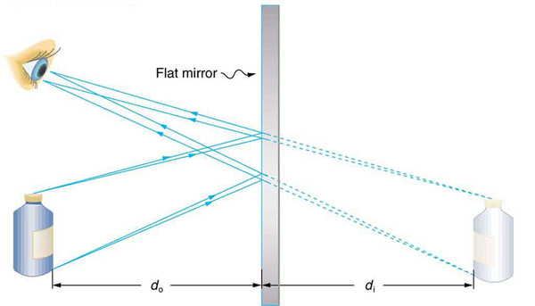
Now let us consider the focal length of a mirror -- for example, the concave spherical mirrors in Figure . Rays of light that strike the surface follow the law of reflection. For a mirror that is large compared with its radius of curvature, as in Figure \(\PageIndex{2a}\), we see that the reflected rays do not cross at the same point, and the mirror does not have a well-defined focal point. If the mirror had the shape of a parabola, the rays would all cross at a single point, and the mirror would have a well-defined focal point. But parabolic mirrors are much more expensive to make than spherical mirrors. The solution is to use a mirror that is small compared with its radius of curvature, as shown in Figure \(\PageIndex{2b}\). (This is the mirror equivalent of the thin lens approximation.) To a very good approximation, this mirror has a well-defined focal point at F that is the focal distance \(f\) from the center of the mirror. The focal length \(f\) of a concave mirror is positive, since it is a converging mirror.
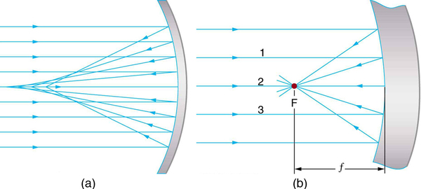
Just as for lenses, the shorter the focal length, the more powerful the mirror; thus, \(P = 1/f\) for a mirror, too. A more strongly curved mirror has a shorter focal length and a greater power. Using the law of reflection and some simple trigonometry, it can be shown that the focal length is half the radius of curvature, or \[f = \frac{R}{2} \label{25.8.1},\] where \(R\) is the radius of curvature of a spherical mirror. The smaller the radius of curvature, the smaller the focal length and, thus, the more powerful the mirror.
The convex mirror shown in Figure also has a focal point. Parallel rays of light reflected from the mirror seem to originate from the point F at the focal distance \(f\) behind the mirror. The focal length and power of a convex mirror are negative, since it is a diverging mirror.
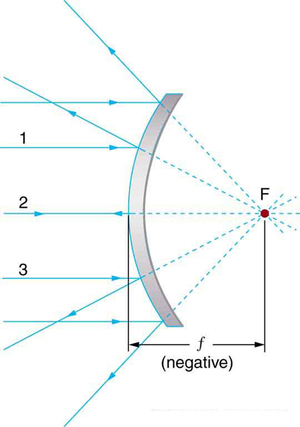
Ray tracing is as useful for mirrors as for lenses. The rules for ray tracing for mirrors are based on the illustrations just discussed:
We will use ray tracing to illustrate how images are formed by mirrors, and we can use ray tracing quantitatively to obtain numerical information. But since we assume each mirror is small compared with its radius of curvature, we can use the thin lens equations for mirrors just as we did for lenses.
Consider the situation shown in Figure , concave spherical mirror reflection, in which an object is placed farther from a concave (converging) mirror than its focal length. That is, \(f\) is positive and \(d_{o} \gt f\), so that we may expect an image similar to the case 1 real image formed by a converging lens. Ray tracing in Figure 4 shows that the rays from a common point on the object all cross at a point on the same side of the mirror as the object. Thus a real image can be projected onto a screen placed at this location. The image distance is positive, and the image is inverted, so its magnification is negative. This is acase 1 image for mirrors.It differs from the case 1 image for lenses only in that the image is on the same side of the mirror as the object. It is otherwise identical.
![Three incident rays, 1, 2, and 3, falling on a concave mirror. Ray 1 falls parallel, ray 2 falls making an angle with the axis and ray 3 passes through focal point F. These rays after reflection converge at a point below the axis. The image is inverted and enlarged and falls below the axis on the same side as the object. Here, the distance from the center of the mirror to F is the focal distance small f, distances of the object and the image from the mirror are d sub o and d sub I, respectively. The heights of the object and the image are h sub o and h sub I, respectively.](images/ch25/fig25-41-three-incident-rays-1-2-and-3-falling-on.jpg)
Electric room heaters use a concave mirror to reflect infrared (IR) radiation from hot coils. Note that IR follows the same law of reflection as visible light. Given that the mirror has a radius of curvature of 50.0 cm and produces an image of the coils 3.00 m away from the mirror, where are the coils?
We are given that the concave mirror projects a real image of the coils at an image distance \(d_{i} = 3.00 m\). The coils are the object, and we are asked to find their location -- that is, to find the object distance \(d_{o}\). We are also given the radius of curvature of the mirror, so that its focal length is \(f = R/2 = 25.0 cm\) (positive since the mirror is concave or converging). Assuming the mirror is small compared with its radius of curvature, we can use the thin lens equations, to solve this problem.
Since \(d_{i}\) and \(f\) are known, thin lens equation can be used to find \(d_{o}\):
Rearranging to isolate \(d_{o}\) gives
Entering known quantities gives a value for \(1/d_{o}\):
This must be inverted to find \(d_{o}\):
Note that the object (the filament) is farther from the mirror than the mirror’s focal length. This is a case 1 image (\(d_{o} \gt f\) and \(f\) positive), consistent with the fact that a real image is formed. You will get the most concentrated thermal energy directly in front of the mirror and 3.00 m away from it. Generally, this is not desirable, since it could cause burns. Usually, you want the rays to emerge parallel, and this is accomplished by having the filament at the focal point of the mirror.
Note that the filament here is not much farther from the mirror than its focal length and that the image produced is considerably farther away. This is exactly analogous to a slide projector. Placing a slide only slightly farther away from the projector lens than its focal length produces an image significantly farther away. As the object gets closer to the focal distance, the image gets farther away. In fact, as the object distance approaches the focal length, the image distance approaches infinity and the rays are sent out parallel to one another.
One of the solar technologies used today for generating electricity is a device (called a parabolic trough or concentrating collector) that concentrates the sunlight onto a blackened pipe that contains a fluid. This heated fluid is pumped to a heat exchanger, where its heat energy is transferred to another system that is used to generate steam -- and so generate electricity through a conventional steam cycle. Figure shows such a working system in southern California. Concave mirrors are used to concentrate the sunlight onto the pipe. The mirror has the approximate shape of a section of a cylinder. For the problem, assume that the mirror is exactly one-quarter of a full cylinder.
To solve anIntegrated Concept Problemwe must first identify the physical principles involved. Part (a) is related to the current topic. Part (b) involves a little math, primarily geometry. Part (c) requires an understanding of heat and density.
(a)To a good approximation for a concave or semi-spherical surface, the point where the parallel rays from the sun converge will be at the focal point, so \(R = 2f = 80.0 cm\).
(b)The insolation is \(900 W/m^{2}\). We must find the cross-sectional area \(A\) of the concave mirror, since the power delivered is \(900 W/m^{2} \times A\). The mirror in this case is a quarter-section of a cylinder, so the area for a length \(L\) of the mirror is \(A = \frac{1}{4} \left( 2 \pi R \right) L \). The area for a length of 1.00 m is then
The insolation on the 1.00-m length of pipe is then
(c)The increase in temperature is given by \(Q = mc \Delta T\). the mass \(m\) of the mineral oil in the one-meter section of pipe is
Therefore, the increase in temperature in one minute is
An array of such pipes in the California desert can provide a thermal output of 250 MW on a sunny day, with fluids reaching temperatures as high as \(400 ^{\circ}\) We are considering only one meter of pipe here, and ignoring heat losses along the pipe.
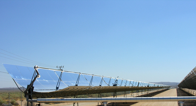
What happens if an object is closer to a concave mirror than its focal length? This is analogous to a case 2 image for lenses (\(d_{o} \lt f\) and \(f\) positive), which is a magnifier. In fact, this is how makeup mirrors act as magnifiers. Figure \(\PageIndex{6a}\) uses ray tracing to locate the image of an object placed close to a concave mirror. Rays from a common point on the object are reflected in such a manner that they appear to be coming from behind the mirror, meaning that the image is virtual and cannot be projected. As with a magnifying glass, the image is upright and larger than the object. This is acase 2 image for mirrorsand is exactly analogous to that for lenses.
![Figure (a) shows three incident rays, 1, 2, and 3, falling on a concave mirror. Ray 1 falls parallel, ray 2 falls making an angle with the axis, and ray 3 is from focal point F. These rays after reflection appear to come from a point above the axis. The image is erect and enlarged, and falls above the axis behind the mirror. Here, the distance from the center of the mirror to F is focal length small f, distances of the object and the image from the mirror are d sub o and d sub I, respectively. The heights of the object and the image are h sub o and h sub i, respectively. Figure (b) shows a woman applying makeup looking into her magnified reflection in the concave mirror.](images/ch25/fig25-43-figure-a-shows-three-incident-rays-1-2-a.png)
All three rays appear to originate from the same point after being reflected, locating the upright virtual image behind the mirror and showing it to be larger than the object. (b) Makeup mirrors are perhaps the most common use of a concave mirror to produce a larger, upright image.
A convex mirror is a diverging mirror (\(f\) is negative) and forms only one type of image. It is acase 3 image-- one that is upright and smaller than the object, just as for diverging lenses. Figure \(\PageIndex{7a}\) uses ray tracing to illustrate the location and size of the case 3 image for mirrors. Since the image is behind the mirror, it cannot be projected and is thus a virtual image. It is also seen to be smaller than the object.
![Figure (a) shows three incident rays, 1, 2, and 3, falling on a convex mirror. Ray 1 falls parallel, ray 2 falls making an angle with the axis, and ray 3 falls obliquely. These rays after reflection appear to come from a point above the axis. The image is erect and diminished and falls above the axis behind the mirror. Here, the distance from the center of the mirror to focal point F is the focal length small f behind the mirror; the distances of the object and the image from the mirror are d sub o and d sub I, respectively. The heights of the object and the image are h sub o and h sub I, respectively. Figure (b) shows an image of a apparel and clothing show room as viewed in a convex mirror; the image appears to be small in size.](images/ch25/fig25-44-figure-a-shows-three-incident-rays-1-2-a.png)
A keratometer is a device used to measure the curvature of the cornea, particularly for fitting contact lenses. Light is reflected from the cornea, which acts like a convex mirror, and the keratometer measures the magnification of the image. The smaller the magnification, the smaller the radius of curvature of the cornea. If the light source is 12.0 cm from the cornea and the image’s magnification is 0.0320, what is the cornea’s radius of curvature?
If we can find the focal length of the convex mirror formed by the cornea, we can find its radius of curvature (the radius of curvature is twice the focal length of a spherical mirror). We are given that the object distance is \(d_{o} = 12.0 cm\) and that \(m = 0.0320\). We first solve for the image distance \(d_{i}\), and then for \(f\).
Entering known values yields
Substituting known values,
This must be inverted to find \(f\).
The radius of curvature is twice the focal length, so that
Although the focal length \(f\) of a convex mirror is defined to be negative, we take the absolute value to give us a positive value for \(R\).
The radius of curvature found here is reasonable for a cornea. The distance from cornea to retina in an adult eye is about 2.0 cm. In practice, many corneas are not spherical, complicating the job of fitting contact lenses. Note that the image distance here is negative, consistent with the fact that the image is behind the mirror, where it cannot be projected. In this section’s Problems and Exercises, you will show that for a fixed object distance, the smaller the radius of curvature, the smaller the magnification.
The three types of images formed by mirrors (cases 1, 2, and 3) are exactly analogous to those formed by lenses, as summarized in the table at the end of "Image Formation by Lenses." It is easiest to concentrate on only three types of images -- then remember that concave mirrors act like convex lenses, whereas convex mirrors act like concave lenses.
TAKE-HOME EXPERIMENT: CONCAVE MIRRORS CLOSE TO HOME
Find a flashlight and identify the curved mirror used in it. Find another flashlight and shine the first flashlight onto the second one, which is turned off. Estimate the focal length of the mirror. You might try shining a flashlight on the curved mirror behind the headlight of a car, keeping the headlight switched off, and determine its focal length.
Problem-Solving Strategy for Mirrors
📖 OpenStax College Physics, Section 25.7. openstax.org · CC BY 4.0
| Section | Title |
|---|---|
| 25.1 | 25.1: The Ray Aspect of Light |
| 25.2 | 25.2: The Law of Reflection |
| 25.3 | 25.3: The Law of Refraction |
| 25.4 | 25.4: Total Internal Reflection |
| 25.5 | 25.5: Dispersion - Rainbows and Prisms |
| 25.6 | 25.6: Image Formation by Lenses |
| 25.7 | 25.7: Image Formation by Mirrors |